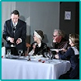
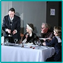
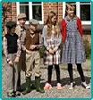
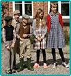

"The Long Christmas Dinner" af Thornton Wilder
Mange steder i hele verden, deriblandt Letland, samles familier hvert år for at fejre julen. Hvert år er der den samme mad på bordet, de samme melodier bliver spillet og de samme situationer og konversationer bliver gentaget fra år til år.
Stykket handler om en familie, som samles hver jul igennem næsten et århundrede. Historien fortæller om deres forhold til hinanden, deres håb, tab og smerte.
Roderick og hans kone Lucia fejrer deres første jul i deres nye hus. De får lækker kalkunsteg og en fantastisk flaske vin imens de lytter til moderens gamle historier. Omtrent 5 år senere slutter fætter Brandon sig til dem, hjemvendt fra Alaska, moder Bayard dør, Roderick og Lucia får børn – deres søn Charles og datteren Genevieve. Men tiden går sin gang og Roderick bliver gammel og dør, hans søn Charles bliver gift med Leonora og oplever hans førstefødtes død. Brendon og Lucia dør, men familien er blevet beriget med deres børnebørn – tvillingerne Sam og Lucia. Tiden går og Sam dør ved fronten i krigen i Europa, men den afslappede juleorden bliver forstyrret af den nye generation, som mangler plads i hjemmet og derfor forlader det. Huset bliver trist uden de unge, men de er i gang med at bygge deres egen rede et sted derude i verden, hvor de samles til julen, og familiens traditioner varer ved…
Liepaja Culture Centers Liepaja Theater, Letland
Liepaja Teatret fra Liepaja Kulturcentret har været igang siden 1954. Ensemblet iscenesætter internationale såvel som lettiske klasikere samt som nutidige forfatteres stykker.
Siden 1995 har Inara Kalnaraja stået i spidsen som direktør for teatret. Foruden drama iscenesætter gruppen også stykker der er baseret på folkesange, poesi og musik. Teatret opfører sædvanligvis deres produktioner i hjembyen Liepaja, men ofte bliver gruppen inviteret til andre byer i Letland.
Sammensætningen af gruppen er variabel, men for det meste er der tale om 20-
Liepaja Theater, Letland
DATO: 6. JULI KL. 20.00
FORESTILLINGER


 Teutonersalen
Teutonersalen
Amard Teatret, Danmark
DATO: 4. JULI KL. 19.30
Grottedyr af Henning Jensen
To mænd kommer til sig selv i, hvad der kunne ligne en grotte for farlige dyr i zoologisk have. De husker intet af, hvor og hvem de var før…
Langsomt vender hukommelsen tilbage, men farven på denne hukommelse er åben for ihærdig diskussion.
Vil de to stakler få svar på deres bønner om at blive fundet og reddet, før natten falder på, og zoologisk have bliver lukket? Og er de helt alene i deres Grotte? Hvem er de? Hvad gør de? Få ikke svar på disse og langt flere spørgsmål I stykket ”Grottedyr”.
Amard Teatret blev grundlagt i 1981 af lærere og elever på Thisted Gymnasium. Først havde det til huse på diverse andre steder i byen, men i 1998 flyttede man for alvor tilbage på gymnasiet.
Gruppen har altid bestået af lærere og elever fra Thisted Gymnasium, som ved deres medlemskab automatisk blev optaget i Dansk Amatør Teater Samvirkes rækker.
Der har været talrige forestillinger i løbet af årene, og repertoiret har favnet vidt. Ved sidste festival i Thisted viste man ”I Rum Sø” af S. Mrozek. I år er valget faldet på et andet absurd stykke i én akt -
Grundlægger / bestyrer er Jacob B. Jessen.
Skuespillere: David Pind Jessen og Sven Rommenhøller, instruktion: Jacob B. Jessen
Oversættelse: Sven Rommenhøller. Varighed: 50 minutter.
Fyrspillene i Sydthy
(Ashøje v. Hurup)
DATO: 5. JULI KL. 14.00
De tre ringninger af Kaj Nissen
Vi er tilbage i 1500-
Stykket beskriver en daglejers kamp mod evige mobberier af sin overordnede, den lokale præst. En dag får daglejeren Søren Bie nok, og i raseri slår han præsten ihjel med en le.
Søren skal for sin ugerning dømmes til galgen, men dommeren får en ide og ændrer Sørens dom. Hvis Søren kan ringe med kirkeklokkerne på tre forskellige kirker i løbet af to timer, kan han slippe for galgen.
Det bliver en kamp for liv eller død, for Søren Bie er ikke vellidt af alle.
Men områdets børn er fordomsfrie og kan ikke se nogen grund til at ønske ham hængt. Så de har en snedig plan for at hjælpe Søren fri af sin hængningsstraf. Vil det lykkes dem at hjælpe ham?
Fyrspillene i Sydthy startede i 1984 med et spil om Lodbjerg Fyr, som dette år fejrede 100 års fødselsdag.
Det grundlæggende i ideen var at spille et nyt sted i Sydthy Kommune hvert år og at få skrevet et nyt stykke, som knytter sig til det sted, hvor der spilles. Det har Fyrspillene nu holdt fast ved i 27 år, noget af en rekord inden for dansk amatørteater.
For det meste er der op til 100 medvirkende. Alle er frivillige med undtagelse af forfatterne til spillene.
Fyrspillene råder over en omfattende garderobe og en stor samling af rekvisitter, som i øvrigt også lejes ud til andre scener eller til private.
I 2003 fik Fyrspillene stillet lokaler i Gettrup gamle skole til rådighed af Sydthy Kommune. Her er der indrettet systue, og teatergarderoben findes også her. I 2006 blev der bygget en stor lagerhal i umiddelbar tilknytning til skolelokalerne til opbevaring af tribuner og store rekvisitter.
Came too quickly af L. Didziuliene-
Opsætningen er meget rustik og ganske livlig.
Juzė er gammeljomfru, og det er på høje tid med et giftermål.
En dag kommer gifteknivene til hendes hus. Naboen Barbora glæder sig over at kunne melde deres ankomst på forhånd. Men der er et lille problem… Bejlerne dukker op med intentionen om at købe en hoppe og ikke at gifte sig… En lille misforståelse, som ender i en række morsomme situationer.
Teatret „Giraitė“ blev grundlagt i 1998.
Der er 15 deltagere, som har forskellige professioner.
Gruppen har produceret 8 opsætninger indtil dato.
I 2014 blev „Giraitė“ anerkendt som det bedste amatørteater i Litauen. Ensemblet deltager regelmæssigt i forskellige festivaler og konkurrencer.
Amateur Theatre ”Giraite”,
Litauen
DATO: 5. JULI KL: 20.30
Don Ellione og Leikfélag Selfoss, Island
DATO: 6. JULI KL. 15.00
"Sillies and strange creatures" af Þórunn Guðmundsdóttir, Don Ellione og gruppen
Fire korte stykker samlet i ét. En anden side af islandske folkefortællinger, som introducerer os til tosserne og mærkværdige skabninger fra den gamle islandske kultur.
Leikfélag Selfoss blev oprettet I 1958 og har I årenes løb opsat forskellige stykker, både islandske og udenlandske. Stykker i fuld længde såvel som korte historier, nye som gamle. Leikfélag Selfoss har igennem årtierne været et af de mest fremtrædende amatør teatre i Island, drevet frem af ambitiøse folk fra denne lille by i Island, Selfoss, som er befolket af omkring 6000 sjæle i dag.
Med NOBA 2015 er det fjerde gang at Leikfélag Selfoss rejser til udlandet for at deltage i en festival. Tre gange tidligere har man været østpå: Færøerne i 1969, Irland i 1984 og Litauen i 2007.
 

Dobbeltmordet på Rosvang af Knud Hove
Årets forestilling er en kriminalkomedie ”Dobbeltmordet på Rosvang”. Den er anderledes på flere måder i forhold til de tidligere forestillinger. Blandt andet flytter vi forestillingen til et nyt sted i parken, ligesom vi har fået mulighed for at inddrage noget af selve hovedbygningen i spillet. Det er også første gang vi opfører et stykke, som slet ingen historisk relation har til Rosvang.
Til gengæld prøver vi at være tidshistorisk korrekte på den måde, at vi er trofaste overfor kostumer, rekvisitter osv. Stykket foregår i 1958 og indeholder lige nøjagtig det, som vi mener er nødvendigt for at opføre en krimi på Rosvang. Her er op til flere drab eller er der? Her er en meget aktiv bedemand og en ditto fotograf, vi har en kogekone som laver klumpgrød fra Femø hver lørdag og ikke at forglemme det forholdsvis snedige kriminal-
Kulturforeningen Rosvang, Danmark, er en amatørteaterforening, der har hjemsted på herregården Rosvang i Thy. Foreningen har eksisteret i syv år og har lavet en forestilling hvert andet år. Vi opfører altid vore stykker i parken på Rosvang. Der er mellem 40 og 50 medvirkende på scenen samt 25 til 30 praktiske medhjælpere, og der er typisk 15 til 20 børn og unge med i hver forestilling.
Kulturforeningen Rosvang, Danmark
(Rosvang v. Sjørring)
DATO: 7. JULI KL. 19.30
"Metamorphosis" af Franz Kafka
Franz Kafkas "Forvandlingen" handler om menneskeværd og menneskelige relationer. Om hvad konsekvensene bliver, når kravene til arbejde og samfund er for store.
Gregor Samsa vågner en morgen med følelsen af at være blevet til et insekt. Indestængt i sin egen psyke klarer han ikke længere at kommunikere med verden omkring sig, ikke engang familien. Menneskelige værdier og relationer har ikke længere nogen betydning. Familielivet ender i stedet for i fordomme, brutalitet, ensomhed, egoisme og menneskers rædsel og afsky for det fremmede.
Koblet med Damir " Dado " Pudars nyskabende fysiske sceneudtryk er "Forvandlingen” en gribende scenisk fortælling. Varighed: 50 minutter.
Hokksund ByTeater er en amatørteatergruppe for voksne, som blev dannet i 1995 under navnet Teaterlaget Øvre Eiker. Gruppen består i dag af ni skuespillere fra forskellige steder i nedre Buskerud.
Hokksund ByTeater er organiseret under Norsk Amatørteaterforbund og arbejder tæt sammen med Øvre Eiker Teaterråd, Teaterrådet Buskerud, Buskerud Teater og Øvre Eiker Kulturkontor.
Vi er en lille gruppe amatørteaterentusiaster, som i tillæg til at rejse rundt på amatørteaterfestivaler sætter forestillinger op i mange genrer i Øvre Eiker regionen. Comedia dell' Arte, absurd teater, historiske spil, pantomime, børneteater, revyer og cabareter -
Kjell Are Jensen -
Marte Jensen -
Bent Tinnlund -
Gry J. johanin -
Elin Støa -
Vidar Bakken -
Damir Dado Pudar -
Hokksund ByTeater, Norge
DATO: 8. JULI KL. 15.00
Axel Gadegaard, Danmark
Ikaros af Kaj Nissen
Stykket indgår i Kaj Nissens “De døde fra Donau”. I “De døde fra Donau” møder vi – ja, det lyder underligt -
En sådan skæbne handler “Ikaros” om: En mand I frit fald – kastet ud fra en flyvemaskine. Hvorfor han befinder sig I denne situation, går gradvist op for ham på vejen ned…
Axel Gadegaard har i mange år arbejdet med og fremført adskillige monologer.
I dag bor han i Kalundborg, men allerede i 1980’erne var han med i flere forestillinger i Thisted-
Instruktør: Louise Emcken, Skuespiller: Axel Gadegaard. Varighed: 25 minutter
DATO: 8. JULI KL. 20.00
"Winners" af Brian Friel
Splódar Theatre Company præsenterer dette mesterstykke af Brian Friel, som nogen gange bliver kaldt Irsk Theaters ”Romeo og Julie”.
Mag, en gravid teenager og Joe, hendes kæreste og fremtidige ægtemand bruger den sidste dag af deres liv på at læse op til afgangseksamen på en bakketop, hvorfra de kan overskue deres hjemby. Her griner de, spøger, skændes og viser en rørende kærlighed til hinanden, mens de mindes deres fortid og imødeser en usikker fremtid.
Denne forunderlige fremstilling af ung kærlighed, skrevet af en af Irlands førende nutidige dramatikere, fremføres af to dramastuderende fra Sligos Institute of Technology.
Splódar blev grundlagt i 1995 som det lokale ensemble i ”The Glens Theatre”, der har til huse i Manorhamilton, County Leintrim, Irland.
Splódar er måske ganske unikke i Irland, idet de opfører stykker på både det irske og engelske sprog. Stykker af kendte irske forfattere som James Joyce, Brian Friel, Frank McGuinness, John B. Keane og Tom Murphy er blevet iscenesat i årenes løb, såvel som dramaer af internationalt kendte navne som Noel Coward, Thornton Wilder, Garrison Keillor og Jean Anouilh.
Ved dens sidste besøg i Thisted i 2006, opførte Splódar den kritikerroste ”At the Black Pig’s Dyke” af Vincent Woods.
Splódar, Glens Centre Theatre, Irland
DATO: 9. JULI KL. 11.00